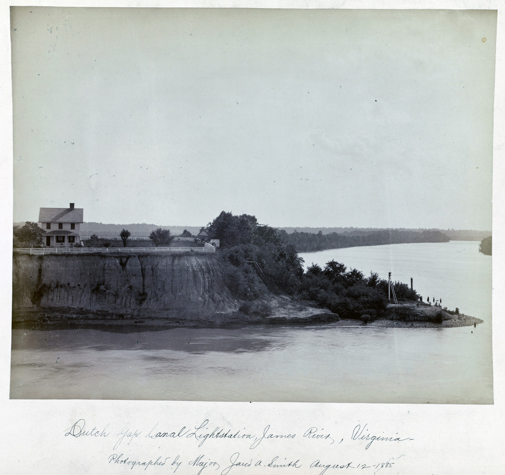
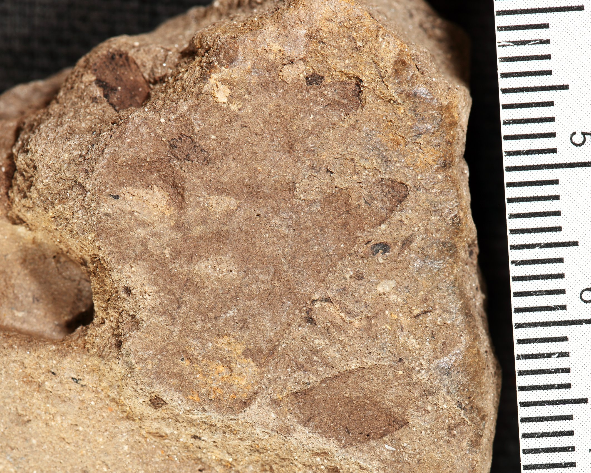
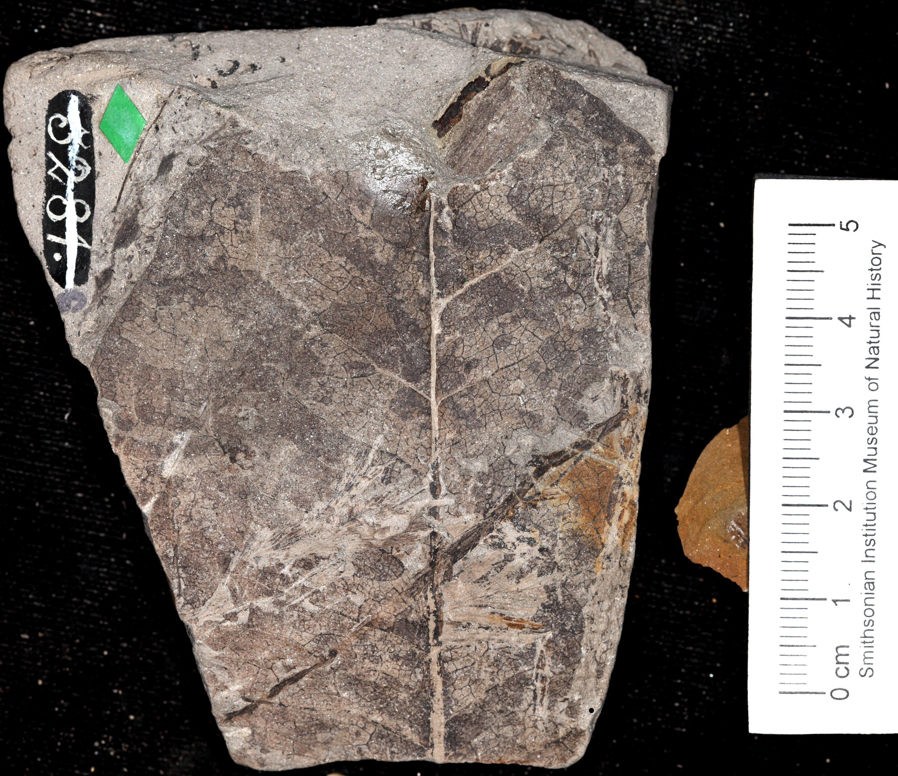
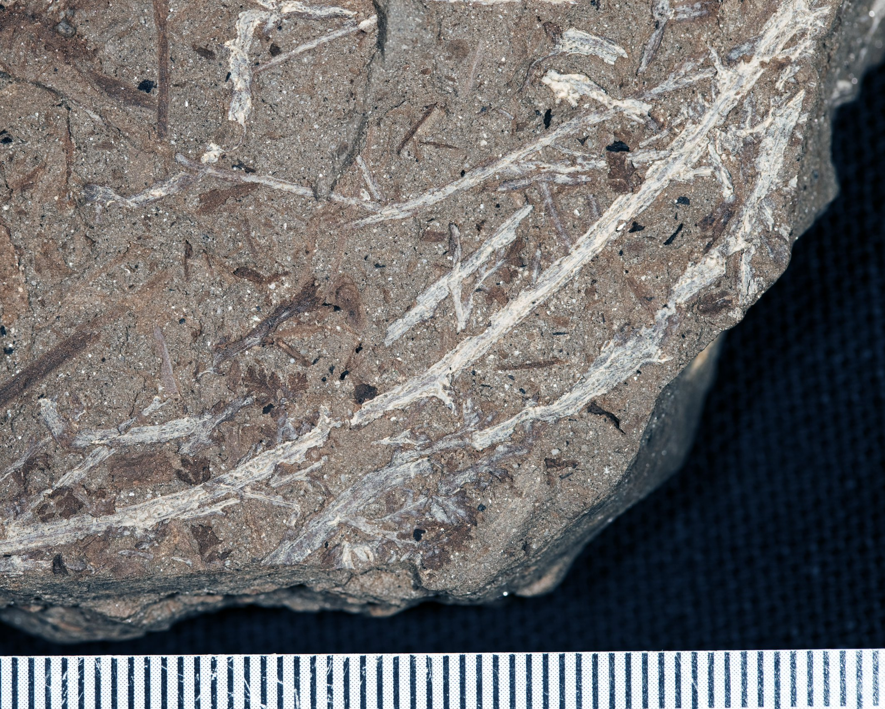
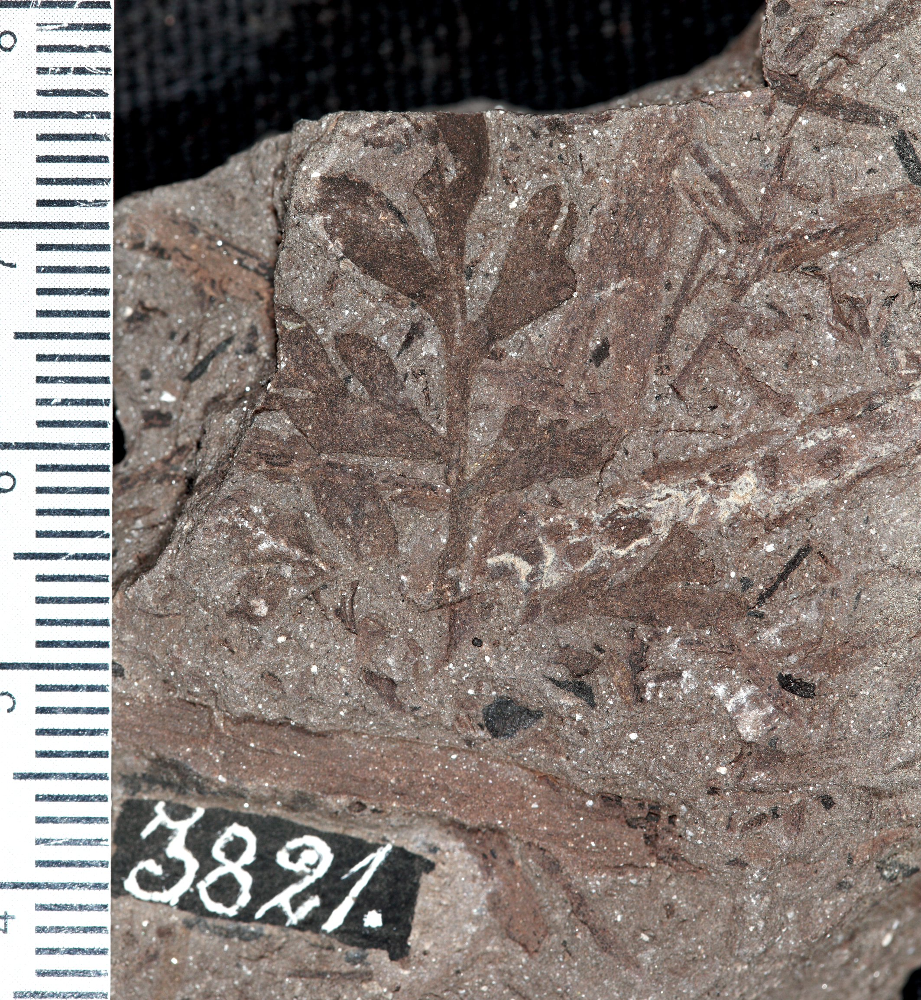
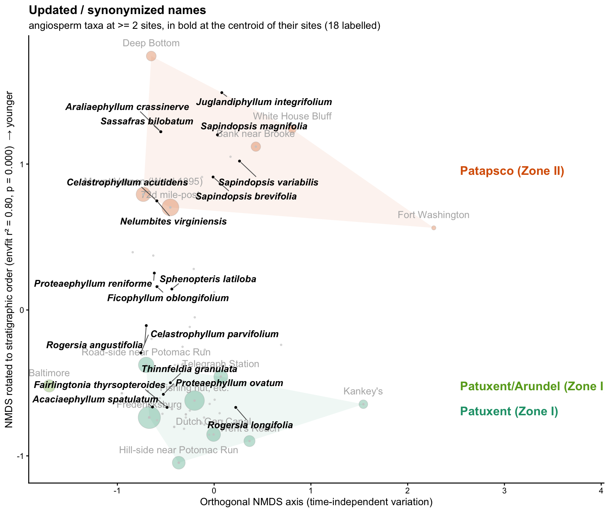
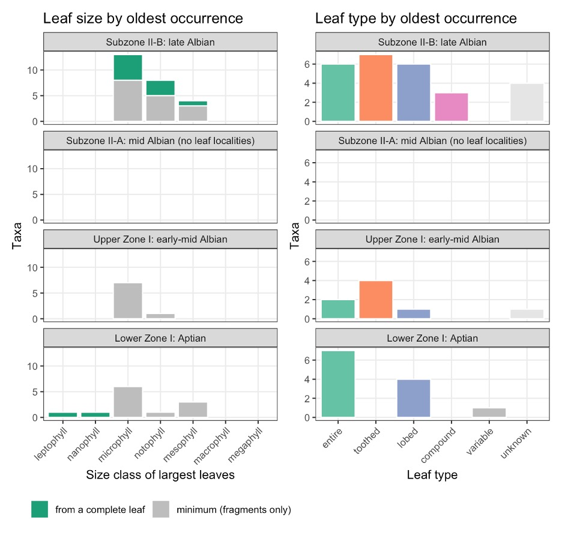

Paleobotany of the Potomac Group
The plant fossils from the Potomac Group in eastern North America have played an important role in our understanding of the diversification of angiosperms. The Potomac Group is a wedge of Cretaceous sediment that stretches out in an arc along the Atlantic coastal plane from Petersburg, VA, north through Maryland, and into Delaware and New Jersey. In Maryland, it is divided into the Patuxent Formation (Fm.), the Arundel Clay, and the Patapsco Fm.

In 1889, William M. Fontaine (1835–1913; Professor of Natural History and Geology at the University of Virginia) published The Potomac or Younger Mesozoic Flora. The book contains his description of the fossil flora of the Potomac Group based on fossils he collected. He named or identified more than 300 fossil species from at least 19 sites, illustrated many of the fossils himself, and gave the angiosperm leaves names that implied close relationship to modern genera, as was typical at the time (e.g. Ficophyllum, Sassafras, Celastrophyllum, Araliaephyllum, Menispermites). His collections were the foundation of later Potomac Group research by other paleobotanists including L.F. Ward (1895) and E.W. Berry (1910; 1911).
In 1963, G. Brenner published his study of pollen and spores from throughout the Potomac Group. He grouped the samples into two zones, Zone I (the Patuxent and Arundel localities) and Zone II (the Patapsco localities), and then split Zone II into subzones II-A, II-B-1, and II-B-2. He reported angiosperm pollen from the base of Zone II, but not from Zone I, and he envisioned the vegetation as a forest of conifers and ferns, into which angiosperms spread. Later, Doyle (1969) suggested Clavatipollenites may be a Zone I angiosperm, and not a gymnosperm as Brenner suspected. He also argued that the successive appearance of more derived pollen types from the Patuxent through the Patapsco to the overlying Raritan Formation, along with the increase in diversity and abundance of angiosperm pollen, was a real signal of the angiosperm diversification.
Doyle and Hickey (1976) and then Hickey and Doyle (1977) put the leaf collections in stratigraphic order based on the pollen and spore zonation that Brenner established and Doyle built on. At the time, there was still some debate about whether the initial diversification of angiosperms was a Cretaceous phenomenon, or if they had evolved much earlier and finally arrea in the fossil record during the Cretaceous. Hickey and Doyle found that Zone I angiosperm leaves were generally rare, small, and had disorganized “low rank” venation, whereas the Zone II-B and Zone III angiosperm leaves included locally abundant types, had more regular venation, and had a wider array of morphologies. Mirroring the pollen story, the successive appearance of more derived leaf types matched what we should expect for a Cretaceous diversification. They also suggested what has come to be known as the “riparian weed” model of early angiosperm evolution, where angiosperms appeared first as fast-growing, mostly low shrubs of bright, disturbance-prone stream-side habitats, eventually becoming dominant plants in riparian habitats and diversifying into aquatic habitats and more stable floodplain habitats.

Hochuli et al. (2006) published an updated calibration of the age of these deposits by correlating with the sequence in Portugal. They showed that lower Zone I (Patuxent) is no older than early Aptian, upper Zone I is early to mid Albian, Zone II-A is no older than mid Albian, and Zone II-B is late Albian, and they interpreted the breaks between formations as gaps in time.
More recently, Feild and colleagues (Feild et al. 2004, 2009) reinterpreted the Zone I angiosperm record in light of the “dark and disturbed” or “ancestral xerophobia” hypothesis. They propose that early angiosperms were shrubs similar to extant Amborella, and that many innovations in angiosperm leaf development and hydraulics followed from adaptation to shady and humid understory habitats. They emphasized the occurrence of leaves like Ficophyllum in rich Zone I assemblages from Fontaine’s Fishing Hut above Dutch Gap and Fredericksburg localities. Although Hickey and Doyle (1977) considered the shady forest understory one of the first habitats that early angiosperms spread into, it could also be the ancestral habitat (Feild et al. 2004). Under this reading the shrubs and herbs in the bright habitats are more derived angiosperms, including early eudicots.

Upchurch’s (1984a, b) work on fossil cuticles from the Potomac Group adds a very interesting element to this. He observed an increase in morphological diversity from Zone I to Zone II-B, and that Zone I cuticles resemble Amborella, Chloranthaceae, and Illiciales. This was long before we knew that Amborella is sister to all other extant angiosperms (Mathews and Donoghue 1999; Soltis et al. 2000). It is possible this cuticle record is also more consistent with the “ancestral xerophobia”-first model than a “riparian weed”-first model of angiosperm evolution.
On the other hand, there are even more small, herbaceous plants with complex leaves than Fontaine originally thought. In 2013, Jud and Hickey described Potomacapnos apeleutheron from the banks of Dutch Gap, and then Jud (2015) described Fairlingtonia thyrsopteroides from Dutch Gap and several other Zone I sites. Spenopteris latilobaFontaine is another herbaceous, lobed angiosperm leaf type from Fish Hut above Dutch Gap.


I used Claude (Anthropic) to re-digitize the tables in the back of Fontaine’s book, and then added the synonymies and updates that I knew about (Ward 1895; Berry 1910, 1911; Upchurch and Doyle 1981; Upchurch 1984a, b; Miller and Lapasha 1985; Skog 1992; Skog 1993; Skog and Dilcher 1994; Skog and Litwin 1995; Skog and Sender 2022; Jud and Hickey 2013; Jud 2015). This resulted in a matrix of 15 sites with more than one species reported and 165 species, 81 of which occur at more than one site. Although many more revisions are necessary (there are probably still too many fern species, and some angiosperms are clearly mis-attributed to extant genera) and this should be considered preliminary, I plotted an NMDS ordination of the updated matrix, rotated the plot so that axis 2 correlates with stratigraphic position (taken from Hickey and Doyle 1977, Figure 3), and then plotted the names of angiosperm leaf types that occur at two or more sites at their site centroids. I did not group the sites by habitat or lithology because Brenner (1963) and Hickey and Doyle (1977) wrote that grouping the sites by lithology is very challenging.

The Zone I and Zone II-B floras separate cleanly. This is consistent with the interpretation by Hochuli et al. (2006) that the zone boundaries correspond to a substantial depositional hiatus, but it is also exacerbated by the absence of Zone II-A leaf collections. Without doing an analysis of growth habit, leaf vein density, or specific leaf area that require careful observations of the specimens, we can still inspect the patterns in leaf size and margin type, both of which show an increase in diversity through time.

The distribution of leaf size shifts larger with time, and the variety of leaf types increases with time, as expected for a diversification, echoing what Doyle and Hickey (1976) and Hickey and Doyle (1977) wrote. Future work could focus on updating the taxonomy of the Potomac Group, scanning for more small leaf types among the ferns and debris, and making data on functional traits and relative abundance available for analysis.
References
- Berry, E.W. 1910. Contributions to the Mesozoic Flora of the Atlantic Coastal Plain-IV. Maryland. Bulletin of the Torrey Botanical Club, 37(1), pp.19-29.
- Berry, E.W. 1911. Maryland Geological Survey: Lower Cretaceous (No. 4). Johns Hopkins Press. Maryland Geological Survey
- Brenner, G.J. 1963. The spores and pollen of the Potomac Group of Maryland. Maryland Department of Geology, Mines and Water Resources Bulletin 27: 1–215.
- Doyle, J.A. 1969. Cretaceous angiosperm pollen of the Atlantic Coastal Plain and its evolutionary significance. Journal of the Arnold Arboretum 50: 1–35.
- Doyle, J.A. & Hickey, L.J. 1976. Pollen and leaves from the mid-Cretaceous Potomac Group and their bearing on early angiosperm evolution. In: Beck, C.B. (ed.), Origin and Early Evolution of Angiosperms. Columbia University Press, New York, pp. 139–206.
- Feild, T.S., Arens, N.C., Doyle, J.A., Dawson, T.E. & Donoghue, M.J. 2004. Dark and disturbed: a new image of early angiosperm ecology. Paleobiology 30: 82–107.
- Feild, T.S., Chatelet, D.S. & Brodribb, T.J. 2009. Ancestral xerophobia: a hypothesis on the whole plant ecophysiology of early angiosperms. Geobiology 7: 237–264.
- Fontaine, W.M. 1889. The Potomac or Younger Mesozoic Flora. U.S. Geological Survey Monograph 15. Washington, D.C.
- Hickey, L.J. & Doyle, J.A. 1977. Early Cretaceous fossil evidence for angiosperm evolution. The Botanical Review 43: 3–104.
- Hochuli, P.A., Heimhofer, U. & Weissert, H. 2006. Timing of early angiosperm radiation: recalibrating the classical succession. Journal of the Geological Society, London 163: 587–594.
- Jud, N.A. 2015. Fossil evidence for a herbaceous diversification of early eudicot angiosperms during the Early Cretaceous. Proceedings of the Royal Society B 282: 20151045. https://doi.org/10.1098/rspb.2015.1045
- Jud, N.A. & Hickey, L.J. 2013. Potomacapnos apeleutheron gen. et sp. nov., a new Early Cretaceous angiosperm from the Potomac Group and its implications for the evolution of eudicot leaf architecture. American Journal of Botany 100: 2437–2449. https://doi.org/10.3732/ajb.1300250
- Mathews, S. & Donoghue, M.J. 1999. The root of angiosperm phylogeny inferred from duplicate phytochrome genes. Science 286: 947–950.
- Miller, ? & Lapasha, 1985. Two species of Elatocladus from the early Cretaceous Potomac Group of Virginia. Review of palaeobotany and palynology, 44(3-4): 183–191.
- Skog, J.E. 1992. The lower cretaceous ferns in the genus Anemia (Schizaeceae), Potomac group of Virginia, and relationships within the genus. Review of Palaeobotany and Palynology, 70(4): 279–295.
- Skog, J.E. 1993. The relationship of the fossil fern Schizaeaopsis Berry to modern genera in the Schizaeaceae. American fern journal, 83(1), pp.20-29.
- Skog, J.E. & Dilcher, D.L. 1994. Lower vascular plants of the Dakota Formation in Kansas and Nebraska, USA. Review of Palaeobotany and Palynology, 80(1-2): 1–18.
- Skog, J.E. & Litwin, R.J. 1995. Reexamination of the fossil fern genus Dryopterites Berry based on reproductive characteristics. Review of Palaeobotany and Palynology, 89(3-4): 235–256.
- Skog, J.E. & Sender, L.M. 2022. New information and family relationship (Hymenophyllaceae) for the fossil fern genus Acrostichopteris Fontaine and a new species from the Lower Cretaceous (Albian) of Spain. American journal of botany, 109(9): 1443–1455.
- Soltis, D.E., Soltis, P.S., Chase, M.W., et al. 2000. Angiosperm phylogeny inferred from 18S rDNA, rbcL, and atpB sequences. Botanical Journal of the Linnean Society 133: 381–461.
- Upchurch, G.R. 1984a. Cuticular anatomy of angiosperm leaves from the Lower Cretaceous Potomac Group. I. Zone I leaves. American Journal of Botany 71: 192–202.
- Upchurch, G.R. 1984b. Cuticle evolution in Early Cretaceous angiosperms from the Potomac Group of Virginia and Maryland. Annals of the Missouri Botanical Garden 71: 522–550.
- Upchurch, G.R. & Doyle, J.A. 1981. Paleoecology of the conifers Frenelopsis and Pseudofrenelopsis (Cheirolepidiaceae) from the Cretaceous Potomac Group of Maryland and Virginia. In: Romans, R.C. (ed.), Geobotany II. Plenum Press, New York, pp. 167–202.
- Ward, L.F. 1895. The Potomac formation. U.S. Geological Survey, 15th Annual Report, pp. 307–397.